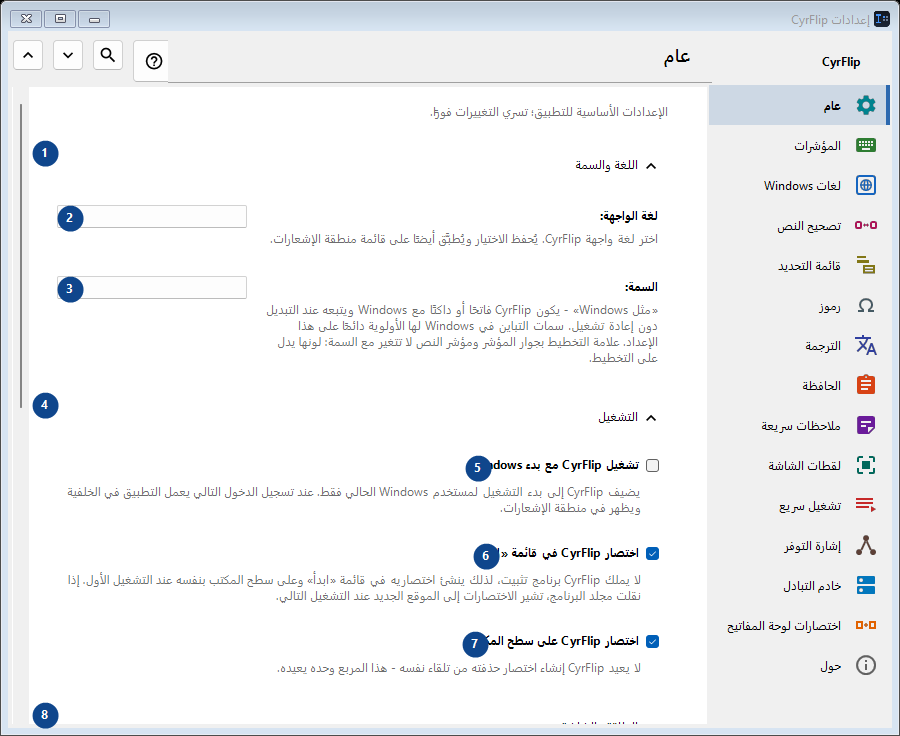
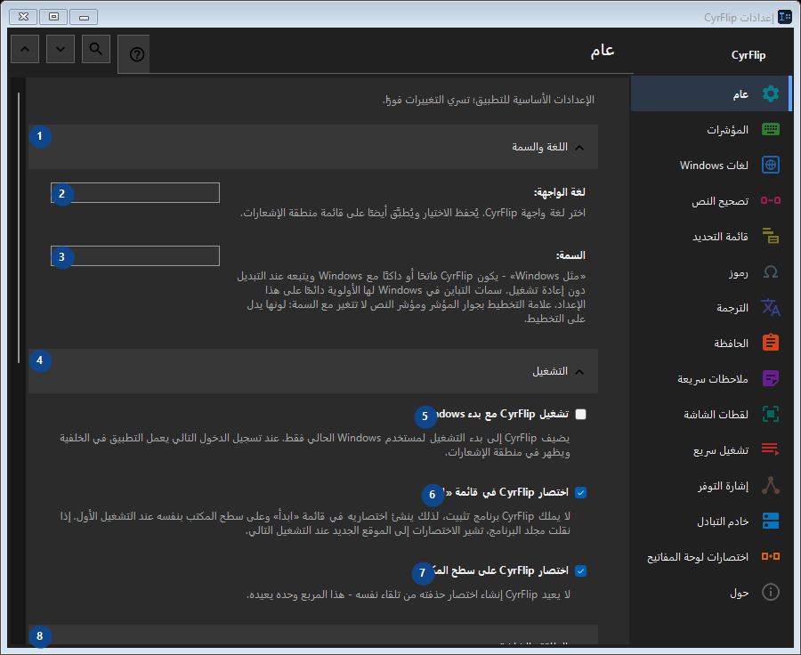

عام
الغرض
الإعدادات الأساسية للتطبيق؛ تسري التغييرات فورًا.


ترتيب الاستخدام
تُطبق الإعدادات فورًا. لا يوجد ترتيب إلزامي؛ استخدم المجموعات أدناه.
العناصر
1. اللغة والسمة
استخدم هذا الأمر لتنفيذ الإجراء المذكور. اقرأ أي طلب تأكيد قبل الموافقة.
اختصاراتك2. لغة الواجهة
اختر أو أدخل القيمة الموضحة بجانب الحقل. راجعها قبل المتابعة.
اختصاراتك3. السمة
اختر أو أدخل القيمة الموضحة بجانب الحقل. راجعها قبل المتابعة.
اختصاراتك4. التشغيل
استخدم هذا الأمر لتنفيذ الإجراء المذكور. اقرأ أي طلب تأكيد قبل الموافقة.
اختصاراتك5. تشغيل CyrFlip مع بدء Windows
يضيف CyrFlip إلى بدء التشغيل لمستخدم Windows الحالي فقط. عند تسجيل الدخول التالي يعمل التطبيق في الخلفية ويظهر في منطقة الإشعارات.
اختصاراتك6. اختصار CyrFlip في قائمة «ابدأ»
لا يملك CyrFlip برنامج تثبيت، لذلك ينشئ اختصاريه في قائمة «ابدأ» وعلى سطح المكتب بنفسه عند التشغيل الأول. إذا نقلت مجلد البرنامج، تشير الاختصارات إلى الموقع الجديد عند التشغيل التالي.
اختصاراتك7. اختصار CyrFlip على سطح المكتب
لا يعيد CyrFlip إنشاء اختصار حذفته من تلقاء نفسه - هذا المربع وحده يعيده.
اختصاراتك8. الطاقة والشاشة
استخدم هذا الأمر لتنفيذ الإجراء المذكور. اقرأ أي طلب تأكيد قبل الموافقة.
اختصاراتك9. منع الكمبيوتر من الدخول في وضع السكون
أثناء التفعيل لن ينتقل Windows إلى وضع السكون أو الإسبات عند الخمول — مفيد لعمليات التنزيل أو النسخ أو المعالجة الطويلة. تُحفظ الحالة: المفتاح الذي تتركه مفعَّلًا يُبقي الكمبيوتر مستيقظًا حتى بعد إعادة التشغيل - ولن يراقب CyrFlip بطاريتك نيابةً عنك.
اختصاراتك10. إبقاء الشاشة مضاءة (كما أثناء الفيديو)
لا تنطفئ الشاشة ولا تُقفل عند الخمول، تمامًا كما أثناء مشاهدة فيديو. هذا لا يلغي القفل بكلمة المرور (Win+L أو سياسة أمان). تُحفظ الحالة: المفتاح الذي تتركه مفعَّلًا يُبقي الشاشة مضاءة حتى بعد إعادة التشغيل.
اختصاراتك11. نقل الإعدادات
استخدم هذا الأمر لتنفيذ الإجراء المذكور. اقرأ أي طلب تأكيد قبل الموافقة.
اختصاراتك12. تصدير الإعدادات...
استخدم هذا الأمر لتنفيذ الإجراء المذكور. اقرأ أي طلب تأكيد قبل الموافقة.
اختصاراتك13. استيراد الإعدادات...
استخدم هذا الأمر لتنفيذ الإجراء المذكور. اقرأ أي طلب تأكيد قبل الموافقة.
اختصاراتك14. استعادة الإعدادات قبل الاستيراد...
لا يوجد ما يمكن استعادته بعد: يحفظ CyrFlip الحالة الأصلية قبل أول تغيير مباشرة. هذا العنصر غير متاح حاليًا. فعّل الميزة أو اختر إدخالًا أولًا.
اختصاراتك15. الاحتفاظ بنسخة احتياطية من الإعدادات في المستندات
ما دام مفعلاً، يحتفظ CyrFlip بنسخة احتياطية متجددة لكل إعداد في Documents\CyrFlip\Backups - تُحفظ أحدث ثلاث نسخ. تنجو النسخة من إعادة التثبيت من متجر Microsoft: يجدها تثبيت جديد ويعرض استعادتها. الملف يحوي أجهزتك ومواقعك وسيناريوهاتك - احتفظ به خاصًا.
اختصاراتك16. افتح مجلد النسخ الاحتياطية
النسخ الاحتياطية ملفات إعدادات عادية مسماة بالتاريخ. افتح المجلد لنسخ واحدة أو لأخذها إلى حاسوب آخر.
اختصاراتك